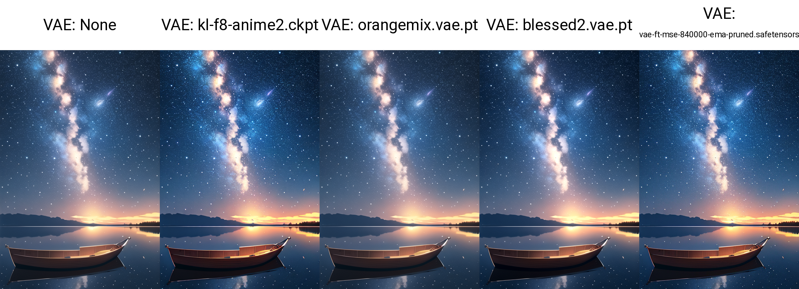

[Stable Diffusion]模型概览
前置
代码库
- 官方 GitHub 仓库：
- 基于 Latent Diffusion 仓库搭建，常用于科研人员做基于 Stable Diffusion 的实验和开发。
- Stable Diffusion v2.0 ~ v2.1: https://github.com/Stability-AI/StableDiffusion
- Stable Diffusion v1.1 ~ v1.5: https://github.com/runwayml/stable-diffusion
- Stable Diffusion v1.1 ~ v1.4: https://github.com/compvis/stable-diffusion
- HuggingFace 🧨Diffusers:
- HuggingFace 的扩散模型库，有着自己的一套 API，支持加载/微调 Stable Diffusion 模型。
- GitHub：https://github.com/huggingface/diffusers
- 文档：https://huggingface.co/docs/diffusers/index
- webui
- 在 stablediffusion 和许多其他仓库（如 ESRGAN, CodeFormer 等）的基础上使用 gradio 搭建的 web 图形化界面，方便易用。
- GitHub：https://github.com/AUTOMATIC1111/stable-diffusion-webui
文件格式
训练好的模型 checkpoint 有如下三种保存格式：
.ckpt：适用于官方 GitHub 仓库和 webui..safetensors：HuggingFace 推出的文件格式，旨在更安全、更快速地加载权重，可用于 webui.- Diffusers 格式：将 Stable Diffusion 的各个组件分别存储在子目录中，每个子目录包含
.json配置文件和权重文件，适用于 HuggingFace Diffusers 库。
举个例子，打开 Stable Diffusion v2.1 官方仓库可以看到，里面既有 .ckpt 文件、又有 .safetensors 文件、还有按组件分目录存储的配置文件和权重文件。事实上，上传者是把上述三种格式一股脑都传到了仓库中，我们按需下载即可。
官方模型
注：v2.0 指代 v2-base，v2.0-v 指代 v2.
FID Score 指示图像质量，CLIP Score 指示图像与文本的匹配程度。对于每个版本的模型，遍历 8 种 cfg-scale (classifier-free guidance scale)，连接成一条曲线。理论上，cfg-scale 越大，图像与文本越匹配，但图像质量可能会被损坏（例如颜色过饱和），这解释了曲线后半段的上升。但当 cfg-scale 比较小时，增大 cfg-scale 反而能让图像质量更好，推测这与训练时条件生成相对无条件生成占比更大有关。
- Stable Diffusion v2.1
- Stable Diffusion v2.1-base
- Stable Diffusion x4-upscaler
- Stable Diffusion v2
- Stable Diffusion v2-depth
- Stable Diffusion v2-inpainting
- Stable Diffusion v2-base
- 说明：从头训练，在过滤后的 LAION-5B 数据集上以 256x256 分辨率训练 550k steps. 接着在同样的数据集上以 512x512 分辨率训练 850k steps.
- 与 v1 对比：
- 使用更大的文本编码器：从 v1 的 CLIP ViT-L/14 换成了 OpenCLIP-ViT/H.
- 使用 CLIP 倒数第二层而非倒数第一层，与 Imagen 和 novelai 一样。
- UNet 的结构略有调整：attention head 固定 dim=64 而不是固定 head 数量，不影响参数量；由于换了文本编码器，text embedding dim 从 768 变成了 1024，使得 cross-attention 的参数量有轻微变化。
- 下载：链接，包含全部三种文件格式，可按需下载。
- 在官方 GitHub 仓库中使用：见 README.
- 在 Diffusers 库中使用：见 Examples.
- Stable Diffusion v1.5
- Stable Diffusion v1.5 inpainting
- Stable Diffusion v1.4
- 说明：以 v1.2 权重初始化，在 laion-aesthetics v2 5+ 数据集上以 512x512 分辨率训练 225k steps，同时以 10% 的概率丢弃文本条件来提升 classifier-free guidance 性能。
- 下载：Diffusers 格式｜
.ckpt格式，其中sd-v1-4.ckpt只包含 EMA 权重；sd-v1-4-full-ema.ckpt包含 EMA 权重和 non-EMA 权重。
- Stable diffusion v1.3
- 说明：以 v1.2 权重初始化，在 laion-improved-aesthetics 数据集上以 512x512 分辨率训练 195k steps，同时以 10% 的概率丢弃文本条件来提升 classifier-free guidance 性能。
- 下载：Diffusers 格式｜
.ckpt格式
- Stable Diffusion v1.2
- 说明：以 v1.1 权重初始化，在 laion-improved-aesthetics 数据集上以 512x512 分辨率训练 515k steps.
- 下载：Diffusers 格式｜
.ckpt格式
- Stable Diffusion v1.1
- 说明：在 laion2B-en 数据集上以 256x256 分辨率训练 237k steps；在 laion-high-resolution 数据集上以 512x512 分辨率训练194k steps.
- 下载：Diffusers 格式｜
.ckpt格式
在 webui 中使用：下载 .ckpt 或 .safetensors 格式的权重，放在 ./models/Stable-diffusion 目录下，刷新 webui 顶部的模型选择框即可看到目录下所有的模型。
VAE
VAE 是 Stable Diffusion (Latent Diffusion) 的一个组件，其编码器将输入图片从图像空间 \(\mathbb R^{3\times H\times W}\) 映射到隐空间 \(\mathbb R^{4\times H/f\times W/f}\)（\(f\) 为下采样系数），在隐空间中通过扩散模型学习数据分布后，再由解码器映射回图像空间。VAE 编码图像的高频细节信息，使得隐空间中的扩散模型能把精力着重花在学习图像的 high-level 语义上，从而摆脱繁琐的细节。
理论上，扩散模型的学习依赖于预训练好的 VAE，但我们也可以在训练好扩散模型后，固定住扩散模型而微调 VAE，使得图片的细节和色调更加完善。因此，我们有时能见到人们单独发布 VAE 权重。
在 webui 中使用
常见的模型权重一般会内置 VAE，无需再额外挂载；但有些模型没有内置 VAE，或者额外训练了自己的 VAE，这时就需要选择正确的 VAE 挂载上去。VAE 的选择框被淹没在了设置标签页里的众多设置项之中，我们可以在 Settings → User interface → Quicksettings list 中添加 sd_vae 一项，这样选择框就会被固定在整个页面上方，方便随时切换。
在 webui 中，有两种使用 VAE 的方式：
- 将 VAE 权重命名为对应模型相同的名字（例如
<model name>.vae.pt），放在./models/Stable-diffusion目录下，那么 webui 会自动加载与模型名匹配的 VAE. - 将 VAE 权重放在
./models/VAE下，在设置项中选择使用哪个 VAE.
社区模型举例
- sd-vae-ft-mse-original：StabilityAI 在原始 kl-f8 autoencoder（使用 KL 作为正则项，下采样到原图大小的 1/8）上微调而来。数据集为 LAION-Aesthetics 和 LAION-Humans 按 1:1 比例混合。首先加载原 EMA 权重并以 L1 + LPIPS 为目标训练 313198 steps，然后以 MSE + 0.1 * LPIPS 为目标训练另外 280k steps. 只微调了 decoder 部分。
- kl-f8-anime2.ckpt：Waifu Diffusion 的 VAE，顾名思义，专门对日漫风格微调。
- blessed_vae：据称能提高对比度。
- orangemix：OrangeMixs 系列模型的 VAE.
测试：基底模型为 AnythingV5Ink_v32Ink.

微调模型 / Dreambooth / 合并模型
在 CivitAI 社区中以 "Checkpoint" 标签标识的模型，即通常说的基底模型（底模）。这些模型或是通过微调、或是通过合并权重得到，往往有着显著的风格，在特定领域上的出图效果往往远好于 Stable Diffusion 官方权重。
其中，Dreambooth 指的是一种微调整个模型使之生成指定对象（即个性化生成）的方法，由 Google 在这篇论文中提出。在 LoRA（详见后文）被引入 Stable Diffusion 之后，人们也会依照 DreamBooth 的方式微调 LoRA.
社区模型举例
- ChilloutMix：写实人物
- majicMIX realistic：写实人物，偏好东亚脸
- DreamShaper：2.5D / 写实
- Realistic Vision：写实
- ReV Animated：2.5D
- Counterfeit-V3.0：2D，日漫
- CyberRealistic：写实人物，偏好欧美脸
- Anything：2D，日漫
- AbsoluteReality：写实
- epiCRealism：写实
- GhostMix：2.5D，CG
另外，该网站收集了一些模型。
Textual Inversion Embeddings
由这篇论文提出的个性化生成方法，通过对一个特殊 text token 做 inversion，使之绑定到某特定对象上。该方法不改动基底模型的权重，仅需保存得到的 text embedding，所以文件非常小（几十到几百 KB）。但毕竟没有微调模型权重，其效果往往不如 LoRA.
特殊用法：对低质量图片做 textual inversion，那么结果可作为 negative embedding 放入 negative prompts 中。
在 webui 中使用
将训练/下载的 textual inversion 文件放在 ./embeddings 目录下，使用时找到 Generate 按钮下方第三个按钮 Show/hide extra networks，在弹出的页面中点击想使用的 embedding，则相关词语会出现在 prompt 框中。注意不要把 negative embedding 写在正向 prompt 里面了。
社区模型举例（Negative embeddings）
LoRA 模型
LoRA 是一种参数高效微调方法（PEFT），最早由这篇论文提出并应用于微调语言大模型之中，后来由这个代码库引入到对 Stable Diffusion 模型的微调之中。LoRA 并不改变原模型的权重，而是在线性层旁边新增一个下采样-上采样的支路，通过训练这个支路来完成微调。因此，同一个基底 Stable Diffusion 模型可以搭载不同的 LoRA 使用，具有很高的灵活性。由于 LoRA 支路网络的参数量小（文件大小在几十到几百 MB 左右），相比微调整个模型，对算力的需求更加友好，并且也能达到不错的效果，因此很快受到大家的热烈欢迎，成为了目前最流行的微调 Stable Diffusion 的方法之一。
在 webui 中使用
将训练/下载的 LoRA 模型放在 ./models/Lora 目录下，使用时找到 Generate 按钮下方第三个按钮 Show/hide extra networks，在弹出的页面中点击想使用的 LoRA，则 <lora:xxx:1> 会出现在 prompt 框中，其中 1 代表 LoRA 权重，可以按需修改。
使用疑问
- 按理说，使用 LoRA 时需要配合训练用到的基底模型才能 work，但是实测发现同一个 LoRA 有时能够在不同基底模型上产生效果，这是为什么？猜测是因为这些基底模型都从同一个权重（如官方权重）微调而来，参数上或多或少差异不大。
- 如何融合多个 LoRA？直接将参数加权求和即可。
社区模型举例
- Detail Tweaker LoRA：细节调整
- Real Mechanical Parts：人体机械
- KoreanDollLikeness (v2.0)
- TaiwanDollLikeness (v2.0)
- blindbox/大概是盲盒：盲盒
- Spider Gwen (commission) | Goofy Ai：格温蜘蛛侠
- Fonglets Hermione Granger (Philosphers Stone)：魔法石赫敏
References
- https://github.com/compvis/stable-diffusion ↩︎
- https://github.com/runwayml/stable-diffusion ↩︎
- https://github.com/Stability-AI/StableDiffusion ↩︎
- https://cyberes.github.io/stable-diffusion-models/ ↩︎
- 文生图模型之Stable Diffusion - 小小将的文章 - 知乎 https://zhuanlan.zhihu.com/p/617134893 ↩︎
- StableDiffusion模型资源探索食用指南 - SeASnAkE的文章 - 知乎 https://zhuanlan.zhihu.com/p/597504900 ↩︎
- 在StableDiffusion中说起VAE时,我们在谈论什么? - SeASnAkE的文章 - 知乎 https://zhuanlan.zhihu.com/p/599129815 ↩︎